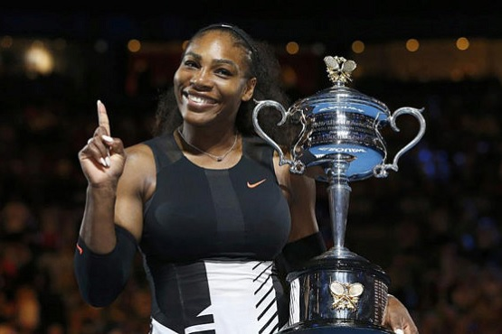
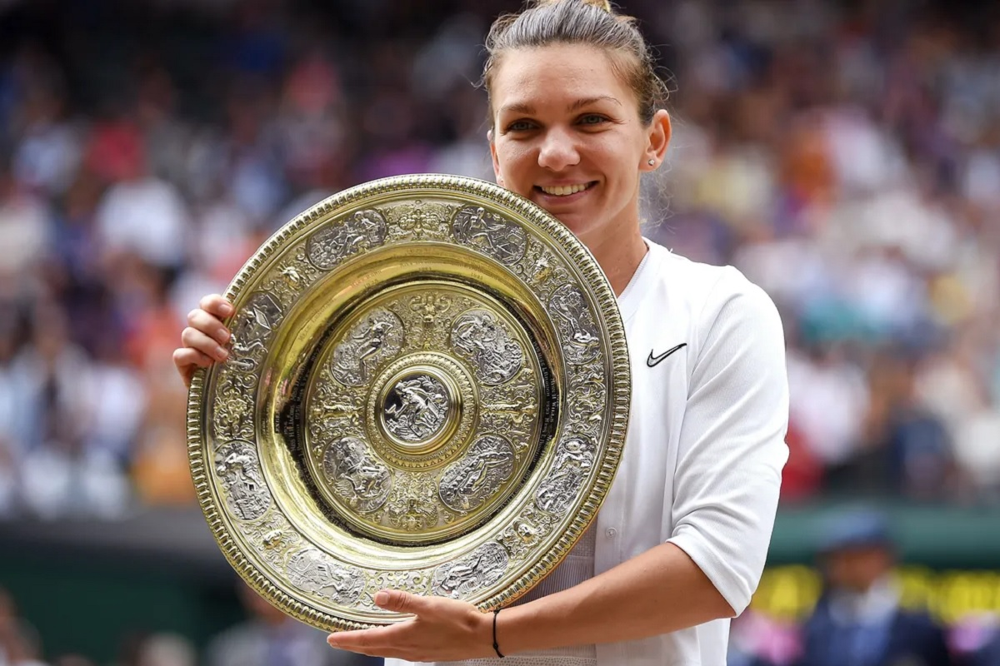
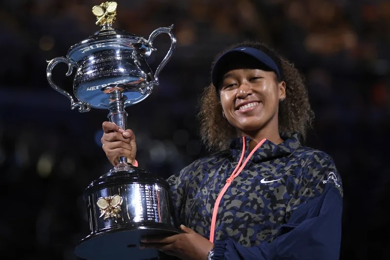
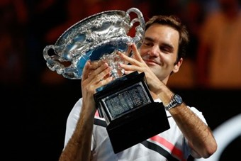
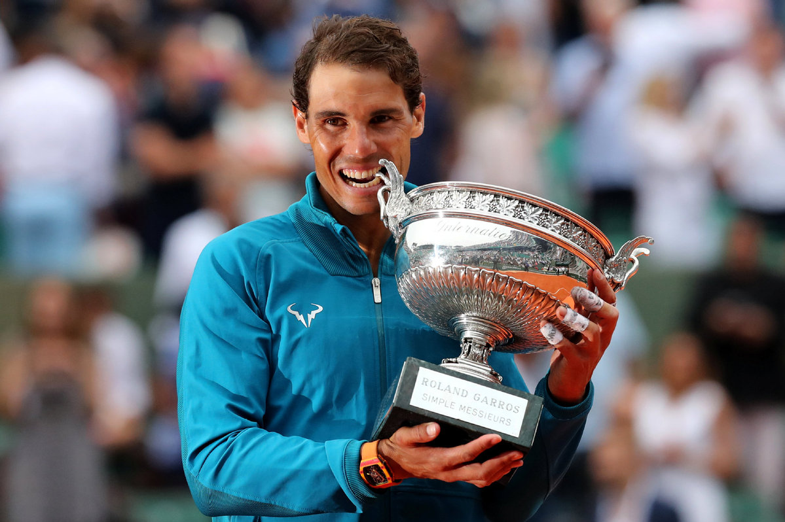
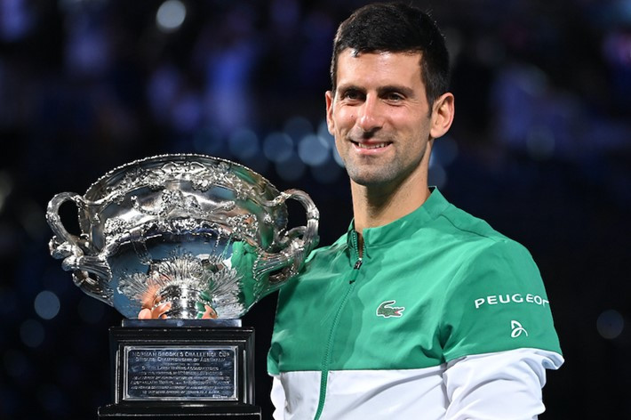
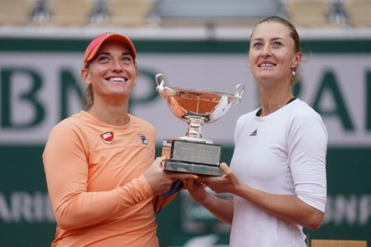

A profi teniszezők minden versenyen, amelyen indulnak ún. ranglistapontokat szerezhetnek. Ezek
alapján,
mind a férfiak, mind a nők esetében készült egy világranglista, amelyet hetente frissítenek. Így
könnyen
meghatározhatóak a játékosok közötti erőviszonyok, illetve meghúzható a versenyekre jelentkezők
közötti szinthatár. Itt látható a világranglista jelenlegi első 10 helyezettje a nők és a férfiak
mezőnyében ( 4. hetében):
Női top 10Összefoglaló
A táblázat a női tenisz világranglista első 10 játékosának nevét és pontszámát
tartalmazza.
név
pont
1.
Ashleigh Barty (AUS)
9655
2.
Naomi Osaka (JPN)
7800
3.
Simona Halep (ROU)
7050
4.
Sofia Kenin (USA)
5915
5.
Elina Svitolina (UKR)
5835
6.
Bianca Andreescu (CAN)
5265
7.
Aryna Sabalenka (BLR)
5205
8.
Serena Williams (USA)
4850
9.
Karolina Pliskova (CZE)
4660
10.
Kiki Bertens (NLD)
4405
Férfi top 10Összefoglaló
A táblázat a férfi tenisz világranglista első 10 játékosának nevét és pontszámát
tartalmazza.
név
pont
1.
Novak Djokovic (SRB)
11963
2.
Rafael Nadal (ESP)
9810
3.
Daniil Medvedev (RUS)
9700
4.
Dominic Thiem (AUT)
8365
5.
Stefanos Tsitsipas (GRC)
7980
6.
Alexander Zverev (DEU)
6125
7.
Andrey Rublev (RUS)
6000
8.
Roger Federer (CHE)
5875
9.
Diego Schwartzman (ARG)
3765
10.
Matteo Berrettini (ITA)
3568
Az aktuális teljes ranglisták itt tekinthetőek meg:
A ranglista adatok, illetve a legfontosabb versenyeken elért helyezések, győzelmek alapján számos
sztárjátékos emelhető ki. Az alábbiakban a női és a férfi tenisz három legsikeresebb, ma is aktív
legendája kerül bemutatásra.
Nők
Serena Williams

Serena Williams a -es Australian Open
döntő után a
kupával
Született: (39 éves)
Ország: Egyesült Államok
Legjobb ranglista helyezés: 1.
Jelenlegi ranglista helyezés: 8.
Leghosszabb idő a ranglista élén: 186 hét
Grand Slam trófeák (23):
Australian Open (7):
, ,
, ,
, ,
Roland Garros (3):
, ,
Wimbledon (7):
, ,
, ,
, ,
US Open (6):
, ,
, ,
, ,
Simona Halep

Simona Halep a -es
Wimbledon döntő után a
kupával
Született: (29 éves)
Ország: Románia
Legjobb ranglista helyezés: 1.
Jelenlegi ranglista helyezés: 3.
Leghosszabb idő a ranglista élén: 48 hét
Grand Slam trófeák (2):
Roland Garros (1):
Wimbledon (1):
Naomi Osaka

Naomi Osaka a -es
Australian Open döntő után a
kupával
Született: (23 éves)
Ország: Japán
Legjobb ranglista helyezés: 1.
Jelenlegi ranglista helyezés: 2.
Leghosszabb idő a ranglista élén: 21 hét
Grand Slam trófeák (4):
Australian Open (2): ,
US Open (2): ,
Férfiak
Roger Federer

Roger Federer a -as
Australian Open döntő után a
kupával
Született: (39 éves)
Ország: Svájc
Kedvenc borítás: fű
Legjobb ranglista helyezés: 1.
Jelenlegi ranglista helyezés: 8.
Leghosszabb idő a ranglista élén: 237 hét
Grand Slam trófeák (20):
Australian Open (6):
, ,
, ,
,
Roland Garros (1):
Wimbledon (8):
, ,
, ,
, ,
,
US Open (5):
, ,
, ,
Rafael Nadal

Rafael Nadal a -as
Roland Garros döntő után a
kupával
Született: (34 éves)
Ország: Spanyolország
Kedvenc borítás: salak
Legjobb ranglista helyezés: 1.
Jelenlegi ranglista helyezés: 2.
Leghosszabb idő a ranglista élén: 56 hét
Grand Slam trófeák (20):
Australian Open (1):
Roland Garros (13):
, ,
, ,
, ,
, ,
, ,
, ,
Wimbledon (2):
,
US Open (4):
, ,
,
Novak Djokovic

Novak Djokovic a -es Australian Open döntő után a
kupával
Született: (33 éves)
Ország: Szerbia
Kedvenc borítás: kemény
Legjobb ranglista helyezés: 1.
Jelenlegi ranglista helyezés: 1.
Leghosszabb idő a ranglista élén: 238 hét
Grand Slam trófeák (18):
Australian Open (9):
, ,
, ,
, ,
, ,
Roland Garros (1):
Wimbledon (5):
, ,
, ,
US Open (3):
, ,
Bár hazai teniszezőink még nem rendelkeznek ekkora eredményekkel azért nálunk is akadnak kisebb sikerek,
most ezek következnek.
Magyarok
Babos Tímea (párosban)

Babos Tímea (balra) Kristina
Mladenoviccal a -as Roland Garros győzelem után a kupával
Született: (27 éves)
Város: Sopron
Legjobb ranglista helyezés: 1.
Jelenlegi ranglista helyezés: 3.
Páros partner: Kristina Mladenovic (Franciaország)